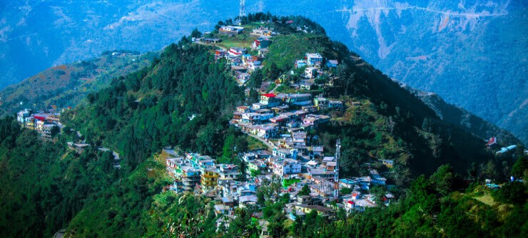

Hill Station
1. Mussoorie
It is a famous hill station in Uttarakhand. Go on a romantic date or plan a solo trip or even ask your friends to join you in this enthralling experience. You won’t regret it one bit after seeing it from your own eyes. You can have a glimpse of the Shivalik ranges and Doon valley in the south. What else? You can go for a walk in Camel’s Back Road or see the Kempty Falls or just buy some local souvenirs from Mall Road. The hill station houses some of the best educational institutions in the state and has good cafes. It has old taverns, estates and churches. A perfect honeymoon destination or just a weekend getaway, Mussoorie is all you want!
2. Auli
Situated in the Chamoli district, in the Garhwal region, this scenic place is one of the most famous skiing destinations in India. Once in Auli, you should head straight to Joshimath. It is the centre of all the tourist attractions in Auli. Whether it is a ropeway to Auli or a trek towards Badrinath, all the mountaineering expeditions start here. It houses the popular Chenab Lake with breathtaking views. Another Auli attraction is the Chhatra Kund, a pretty little lake surrounded by pine, deodar and oak trees. The hill station also gives the perfect view of Nanda Devi, the second highest peak in India. Sounds amazing, right?
3. Chopta
Imagine a snow-covered hamlet with dwindling forests of pine, oaks, deodars and rhododendrons! A small place away from the noisy environment with snow reflecting the sun rays and the sweet breeze flowing by. Chopta is the perfect place for sightseeing, trekking, camping, bird watching,